Ensaios em relés


Ensaios em relés da subestação
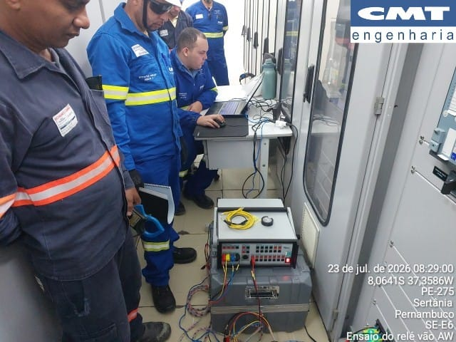
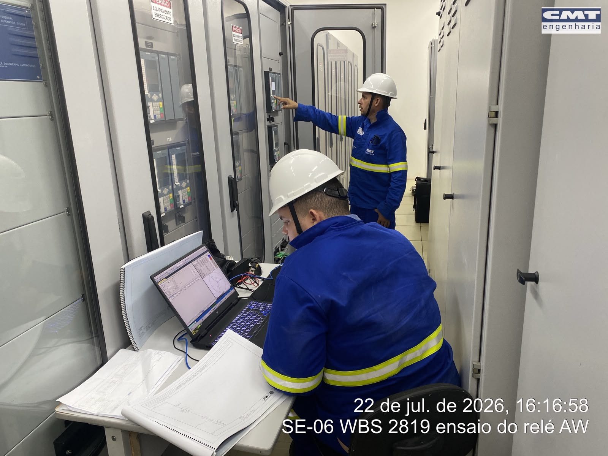
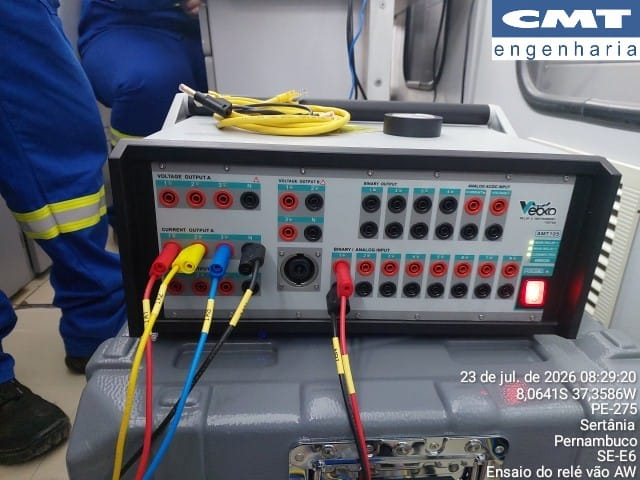
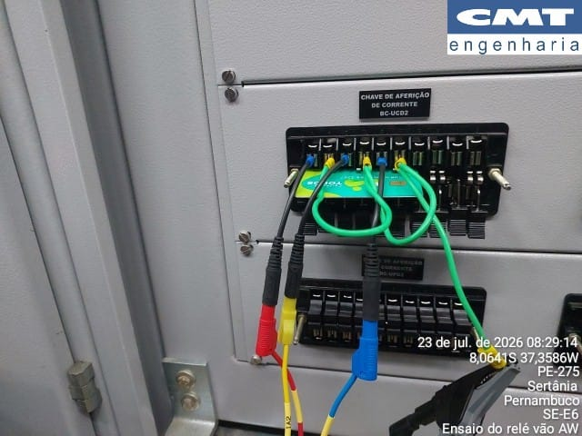
Relé de monitoramento de gases
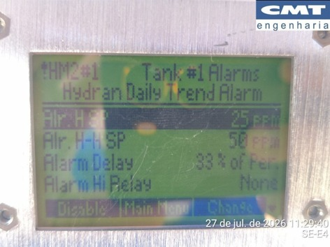
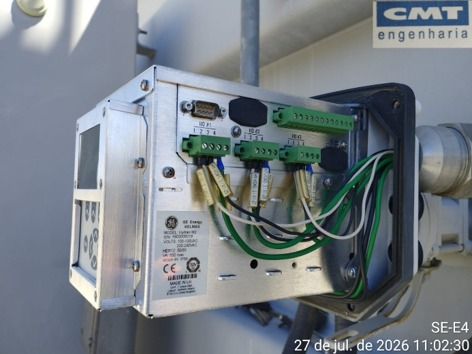
Verificação e reaperto das conexões dos terminais do relé de monitoramento de gases.
Teste de proteção de relés (SE-E1)
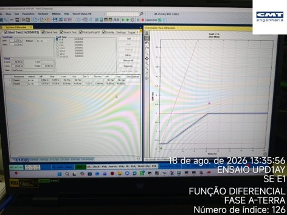
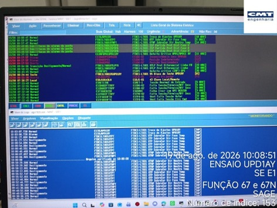
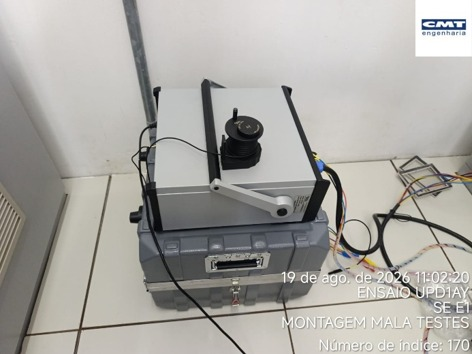
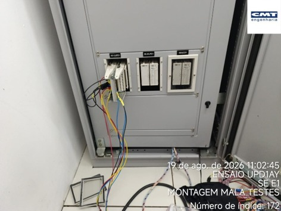
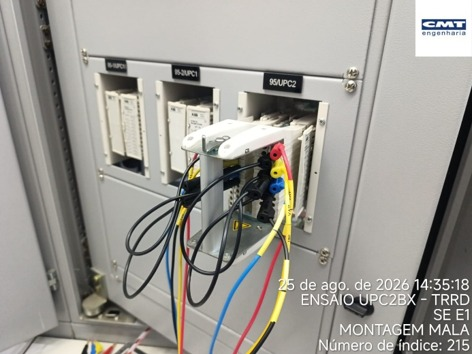
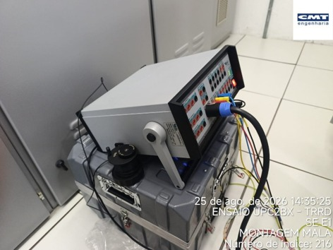
Na ocasião foi identificado que o LED (Target LED 6) que indica faltas à terra (REF) no UPC1BX não estava ficando aceso (Latch), sendo assim foi alterada sua condição para acender quando houver faltas correlatas à terra.
Foi identificado que a atuação da BO OUT301 de Desligamento/Proteção do disjuntor do TRRD, no IED UPC2BX, não estava aparecendo no log de eventos (SER) do SEL, sendo assim, foi realizada a implementação da alteração no SER Points para indicar essa alteração.
Ao testar a função diferencial 87 no UPC1BX, foi detectado que para as BOs serem atuadas é necessário recepção de goose através das CCIN01, 02 e 03, não podendo ser identificadas a partir da configuração 61850 do IED. Portanto, para o teste isolado do IED, foi negada temporariamente essa condição para que o teste pudesse ser realizado.
Por fim, durante os testes, foram coletados ainda relatórios das macros de teste na mala VEBKO, logs de evento do IED, oscilografias, printscreen de atuações das proteções na lista de alarmes e logs do SAGE.